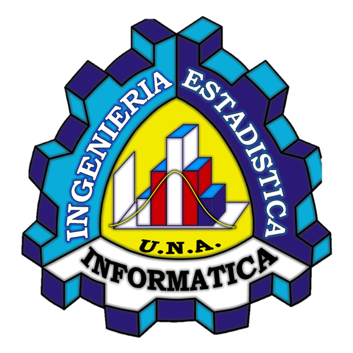

Portafolio – Programación Numérica
Estudiante: Roberto Angel Ticona Miramira · Docente: Torres Cruz Fred · Sección: A
Estudiante: Roberto Angel Ticona Miramira · Docente: Torres Cruz Fred · Sección: A
La Programación Numérica es una rama de la matemática aplicada y la computación que utiliza métodos algorítmicos para resolver problemas matemáticos de forma aproximada pero eficiente. Su importancia radica en que permite abordar situaciones donde las soluciones exactas son imposibles o muy costosas de calcular, aplicándose en ingeniería, ciencias aplicadas, economía y más.
A través de este portafolio, se documentan las actividades y proyectos desarrollados en el curso, mostrando tanto la teoría como la implementación práctica en distintos lenguajes de programación.
Espacio para documentar mis actividades, tareas y proyectos del curso Programación Numérica. Aquí encontrarás las unidades, con descripciones y enlaces a los trabajos realizados.
Incluye actividades, ejercicios y proyectos desarrollados en la segunda unidad.
Ver Unidad 2